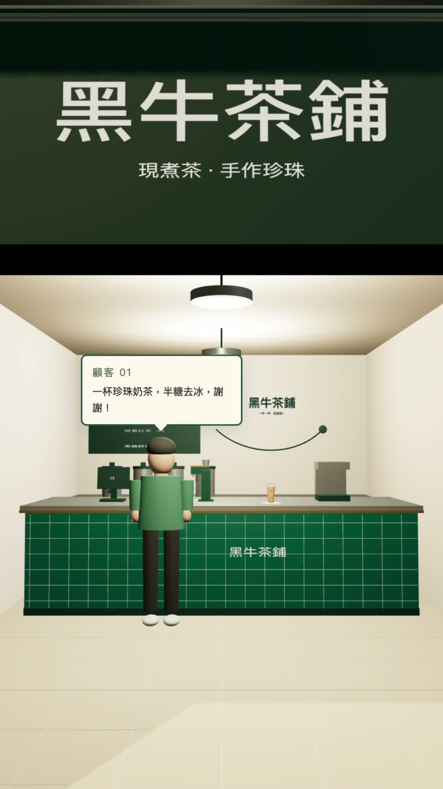

ASTRA 實作 · 黑牛茶鋪60 秒，
60 秒，
你能接幾位客人？
影片裡的珍奶小店，你也可以直接玩。
想做自己的？四階段提示詞都在這裡。
免費試玩 · 手機、電腦瀏覽器都能開 · 不用下載
開始挑戰
進入遊戲後，按「開始製作」→「60 秒接客」。
我影片那輪接了 4 位。換你挑戰 🧋

做一間自己的店
先做出第一杯，再慢慢加。
不用一次完成整間店。每一步玩得動，再貼下一段提示詞。
- 01準備一張照片
自己的珍奶或店面照片，再想一個店名。
- 02開啟 Codex
建立新專案，把照片附在對話裡。查看官方入門 ↗
- 03複製，貼上，玩一輪
從第一段開始，開啟 AI 提供的預覽，親自點一輪。
01先做出第一杯接單、加料、選甜度冰量，再把飲料交給客人。
提示詞 01
請以我附的照片作為美術參考，製作一個可以在瀏覽器操作的台灣珍珠奶茶小店遊戲，店名先用「我的珍奶店」。 風格：溫暖、乾淨的 3D 小店，使用深綠、奶油白與木色。畫面要像一間有設計感的小店。以繁體中文呈現店名、訂單、提示與操作按鈕。 先完成一位客人的不限時練習： 1. 客人走到櫃台，清楚顯示珍珠奶茶訂單、甜度、冰量。 2. 玩家按「加入珍珠」，看到珍珠落入透明杯；按「倒入奶茶」，看到奶茶液面上升。 3. 玩家自行選擇甜度與冰量，不要自動替玩家選正確答案。 4. 按「出餐」時，檢查珍珠、奶茶、甜度與冰量。錯誤要清楚提示並允許修正；正確才交杯。 5. 同一杯完成的飲料移到取餐處，由客人拿走，再沿旁邊的通道離開。 6. 「重新開始」要恢復空杯、未選的甜度冰量與新的顧客狀態。 請直接完成可操作的原型、提供本機預覽，並實際核對整個流程。優先採用簡單可靠的前端方案，先不新增帳號、付款或模型連線。完成後簡短說明怎麼玩，以及還有哪些地方尚未驗證。
02加入 60 秒接客客人持續補位，時間到就看你服務了幾位。
提示詞 02
在目前已能操作的小店上，加入「60 秒接客」模式，保留不限時練習。 目標是看玩家在完整 60 秒內能服務幾位客人。正確接受一張訂單加一位；完成三張後仍繼續。 隊伍保持一位目前客人與五位後方客人。前一位拿到飲料、開始往旁邊離開時，下一位就向前補位，新客人從隊尾加入。不要等前一位完全走出店門才讓下一位前進。 第一位到櫃台、製作介面可操作後才開始倒數。倒數開始後，切換視角或暫時切到其他分頁仍會消耗時間。 左側清楚顯示剩餘秒數、已服務人數、目前及接下來兩張訂單，以及「後面還有 5 位・持續排隊」。到 0 秒就停止接受新出餐，顯示「時間到！你服務了 N 位客人」。截止前已接受的飲料可以完成交杯動畫。 使用不同甜度與冰量的訂單，給每位客人獨立編號，防止重複計分。重新挑戰時，要清空倒數、分數、杯子與排隊狀態。 請用一輪能服務超過三位的操作驗證玩法，並檢查錯誤訂單、最後一秒出餐、重新挑戰，以及前後兩位客人交接時隊伍是否持續移動。
03讓畫面與操作更順近看杯子、看清隊伍，手機也能找到按鈕。
提示詞 03
請改善目前遊戲的展示與操作視角： - 提供看得到製作檯、目前客人及完整隊伍的側面視角，讓後方客人的頭部不會全部重疊。 - 提供近看製作杯的視角，方便看清珍珠落下與奶茶注入。 - 玩家自行選好視角後，出餐或換客人時不要強制把鏡頭切回去。 - 製作按鈕、甜度、冰量、出餐與重新挑戰在桌面視窗中都能找到；短視窗或手機畫面可以捲動操作面板。 - 每個顧客交杯與離場動作，要和實際訂單與計分一致。 請保留已經正確的玩法，只修改展示和操作上的問題，完成後重新檢查一輪 60 秒流程。
04加上稱號與最佳紀錄實習店員 → 熟手店員 → 店長，再挑戰自己的紀錄。
提示詞 04
在現有 60 秒玩法上，加上清楚的結算卡，不改變倒數、製作速度或出餐判定。 到 0 秒時，用最大字顯示這輪真正完成的客人人數，依分數給予稱號：0–2 位「實習店員」、3–4 位「熟手店員」、5 位以上「店長」。同時顯示三個門檻，讓玩家知道下一輪差幾位。 在同一個瀏覽器儲存最高完成數，顯示「此瀏覽器最佳」。較低分數不覆蓋高分，重新整理後仍保留。只有真正超過既有紀錄才顯示「突破自己的最佳紀錄」。如果瀏覽器不允許儲存，不要讓遊戲壞掉，改顯示「本次開啟最佳」。 新增「再挑戰 60 秒」按鈕。按下後，這輪計分回到 0、杯子清空、訂單回到第一位、六人隊伍重設；第一位到位才重新開始 60 秒。個人最佳保留。也可以切回不限時練習。 請檢查稱號邊界 2→3 與 4→5、同分、較低分、新高分、重新整理，以及手機上結果卡與其他按鈕是否重疊。不要用預設高分或假排行榜。
開始前，你可能想問
玩遊戲需要付費或 AI 帳號嗎？
不用。按上面的「直接玩黑牛茶鋪」，就能在瀏覽器試玩。自己用 AI 製作遊戲時，才需要開發工具帳號；可用模型、功能與額度以你的方案為準。
貼一次，就會跟影片一模一樣嗎？
不會每次都一樣。照片、模型和每次修改都會影響結果；這四段是整理後的起點。先確認接單、製作、交杯能順利完成，再加上排隊與倒數。
遊戲在 IG 裡開不起來怎麼辦？
試著用手機的 Safari 或 Chrome 開啟遊戲連結，再重新載入。教學與提示詞可以留在這一頁，隨時回來看。
從一杯開始
去接第一位客人 ↗先玩一輪，手感最有感。
做自己的版本時，也可以換店名、配色和訂單。